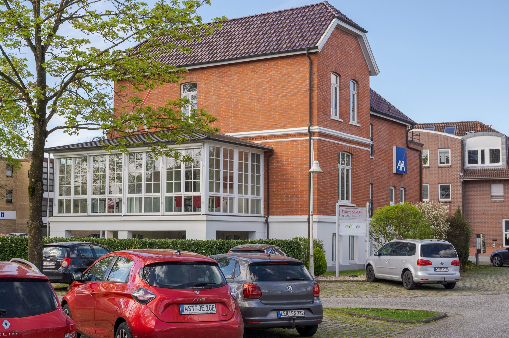

Faut-il financer l'assistant IA du service Sinistres ?
Comité de direction, groupe 3
R5.MDEE.14 Business model 2, M. Ryckebusch
Romane Da Silva, Yoan Bailleul & Sofian Chtioui, BUT 3 TC MDEE, IUT de Roubaix, 25/11/2026
Les hypothèses du groupe 3
Investissement
40 000 €
Dépense initiale
Charges
15 000 €
Par an
Gains
50 000 €
Par an
Les calculs
Flux net annuel
50 000 − 15 000
35 000 €
Gain net année 1
35 000 − 40 000
−5 000 €
ROI année 1
−5 000 / 40 000 × 100
−12,5 %
Payback
40 000 / 35 000 × 12
13,7 mois
Source : Ryckebusch, support de la séance 2, Business model 2, (consulté le 25/11/2026)
La mise est récupérée au mois 14
Flux cumulés du projet, en k€. Hypothèse : flux nets réguliers de 2 917 €/mois
Trois briques du Canvas impactées
Proposition de valeur
Sinistre traité plus vite
Réponse client rapide
Dossier suivi en continu
Dossier suivi en continu
Activités clés
Tri et instruction automatisés
Pré-analyse des dossiers
Experts sur les cas complexes
Experts sur les cas complexes
Structure de coûts
40 000 € puis 15 000 € par an
Intégration, licences
Maintenance
Maintenance
Trois KPI pour piloter
Délai moyen de traitement d'un sinistre
En jours, avant et après l'IA
Coût de gestion par dossier
En euros, gains convertis en économies
Satisfaction client après sinistre
Note sur 10, taux de réclamations
Deux risques et leur maîtrise

Risque 1
Gains surestimés
Une heure gagnée n'est pas une économie
Valoriser le temps libéré
Suivre les gains réels chaque mois
Suivre les gains réels chaque mois
Risque 2
Erreurs de l'IA sur les dossiers
Mauvaise décision, données sensibles des assurés
Validation humaine des cas sensibles
Audit trimestriel, conformité RGPD
Audit trimestriel, conformité RGPD
Notre décision : ajuster
Tel quel
−5 000 € en année 1
Payback 13,7 mois
Payback 13,7 mois
Non rentable la première année
Ajusté
Lancement en phases, 30 000 €
ROI 16,7 % · payback 10,3 mois
Extension après 6 mois si les KPI sont atteints